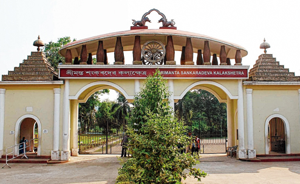

Kalakshetra

Srimanta Sankaradev Kalakshetra commonly Kalakshetra is a cultural institution in the Panjabari area of Guwahati, Assam, named after the medieval poet-playwright and reformer Srimanta Sankardev.[2] It includes a cultural museum, library and various facilities for preserving, demonstrating and performing cultural items, besides a children's park. In addition to being Northeast India's largest cultural congregation, the Kalakshetra is also a major tourist spot in Guwahati. Built in the 1990s, the artistic excellence of Assam and rest of the north-eastern region is displayed here.

HOW TO REACH ?
Nearest Airport:Guwahati
Nearest Railway Station:Guwahati
Nearest Bus Stand:Guwahati